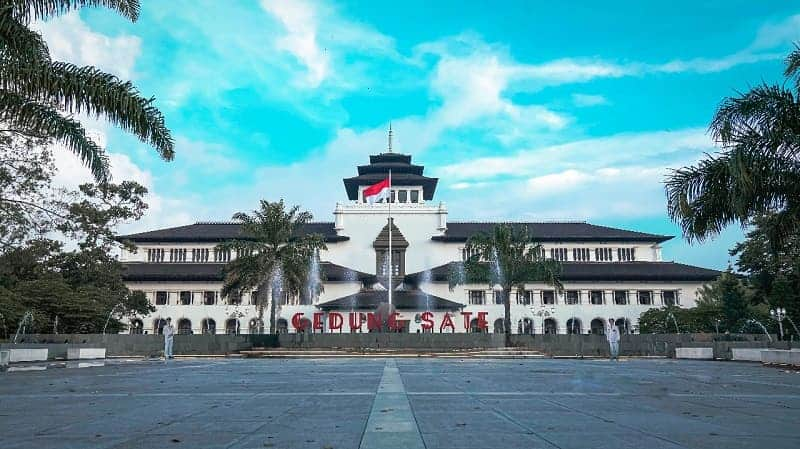
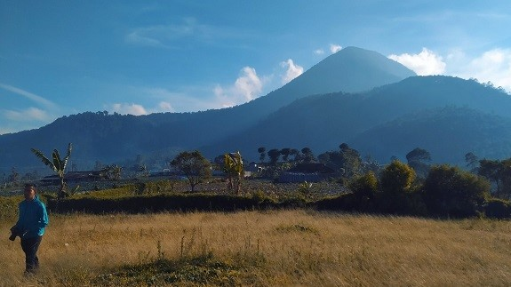
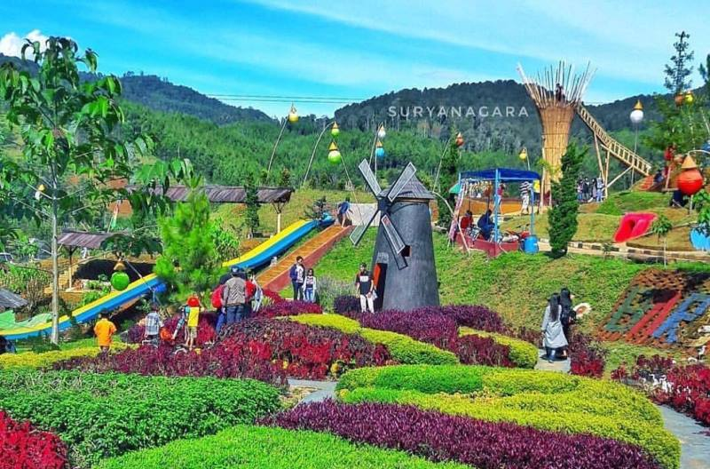
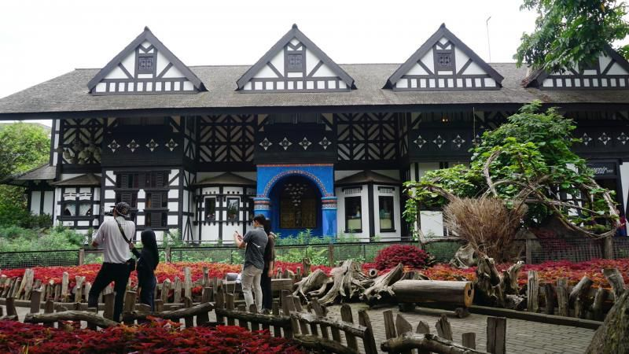

Kota Metropolitan Terbesar Ketiga di Indonesia setelah Jabodetabek dan Gerbangkertosusila.
Sejarah

Gedung Sate
Kata Bandung berasal dari kata bendung atau bendungan karena terbendungnya sungai Citarum oleh lava Gunung Tangkuban Parahu yang lalu membentuk telaga. Legenda yang diceritakan oleh orang-orang tua di Bandung mengatakan bahwa nama Bandung diambil dari sebuah kendaraan air yang terdiri dari dua perahu yang diikat berdampingan yang disebut perahu bandung yang digunakan oleh Bupati Bandung, R.A. Wiranatakusumah II, untuk melayari Ci Tarum dalam mencari tempat kedudukan kabupaten yang baru untuk menggantikan ibu kota yang lama di Dayeuhkolot.
Berdasarkan filosofi Sunda, kata Bandung juga berasal dari kalimat Nga-Bandung-an Banda Indung, yang merupakan kalimat sakral dan luhur karena mengandung nilai ajaran Sunda. Nga-Bandung-an artinya menyaksikan atau bersaksi. Banda adalah segala sesuatu yang berada di alam hidup yaitu di bumi dan atmosfer, baik makhluk hidup maupun benda mati. Sinonim dari banda adalah harta. Indung berarti Ibu atau Bumi, disebut juga sebagai Ibu Pertiwi tempat Banda berada.
Geografis

Geografis
Kota Bandung dikelilingi oleh pegunungan, sehingga bentuk morfologi wilayahnya bagaikan sebuah mangkuk raksasa,[11] secara geografis kota ini terletak di tengah-tengah provinsi Jawa Barat, serta berada pada ketinggian ±768 m di atas permukaan laut, dengan titik tertinggi di berada di sebelah utara dengan ketinggian 1.050 meter di atas permukaan laut dan sebelah selatan merupakan kawasan rendah dengan ketinggian 675 meter di atas permukaan laut.
Wisata

Wisata
Sejak dibukanya Jalan Tol Cipularang, kota Bandung telah menjadi tujuan utama dalam menikmati liburan akhir pekan terutama dari masyarakat yang berasal dari Jakarta sekitarnya. Selain menjadi kota wisata belanja, kota Bandung juga dikenal dengan sejumlah besar bangunan lama berarsitektur peninggalan Belanda.
Farm House Lembang

Farm House Susu Lembang
Kota Bandung dikelilingi oleh pegunungan, sehingga bentuk morfologi wilayahnya bagaikan sebuah mangkok raksasa, [9] secara geografis kota ini terletak di tengah-tengah provinsi Jawa Barat, serta berada pada ketinggian ±768 m di atas permukaan laut, dengan titik tertinggi di berada di sebelah utara dengan ketinggian 1.050 meter di atas permukaan laut dan sebelah selatan merupakan kawasan rendah dengan ketinggian 675 meter diatas permukaan laut.
Observatorium Bosscha
Observatorium Bosscha
Memiliki beberapa teleskop, antara lain, Refraktor Ganda Zeiss, Schmidt Bimasakti, Refraktor Bamberg, Cassegrain GOTO, dan Teleskop Surya. Refraktor Ganda Zeiss adalah jenis teleskop terbesar untuk meneropong bintang. Benda ini diletakkan pada atap kubah sehingga saat teropong digunakan, atap tersebut harus dibuka. Observatorium Bosscha boleh dikunjungi oleh siapa pun, tanpa ribet. Namun, bagi yang ingin menggunakan teleskop Zeiss, wajib mendaftarkan diri. Untuk instansi atau lembaga pendidikan, diberikan jadwal hari selasa sampai jumat. Sementara itu, kunjungan individu dibuka setiap hari Sabtu.
Informasi selanjutnya bisa Anda dapatkan di Wikipedia